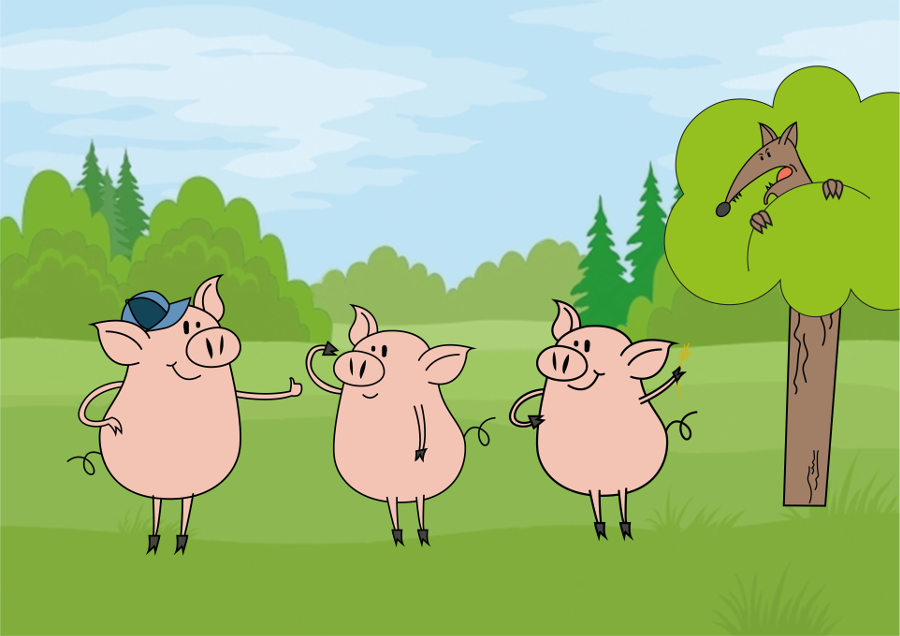
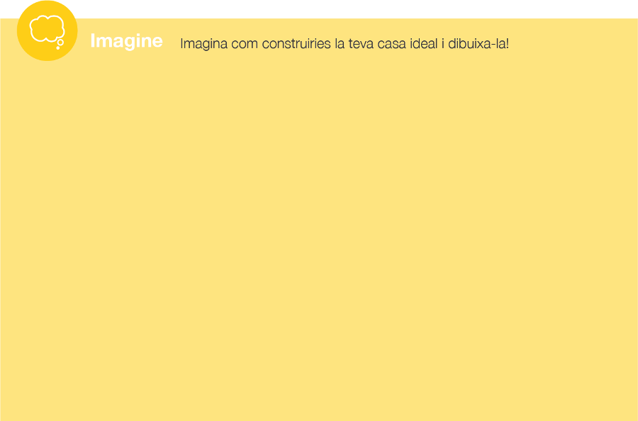
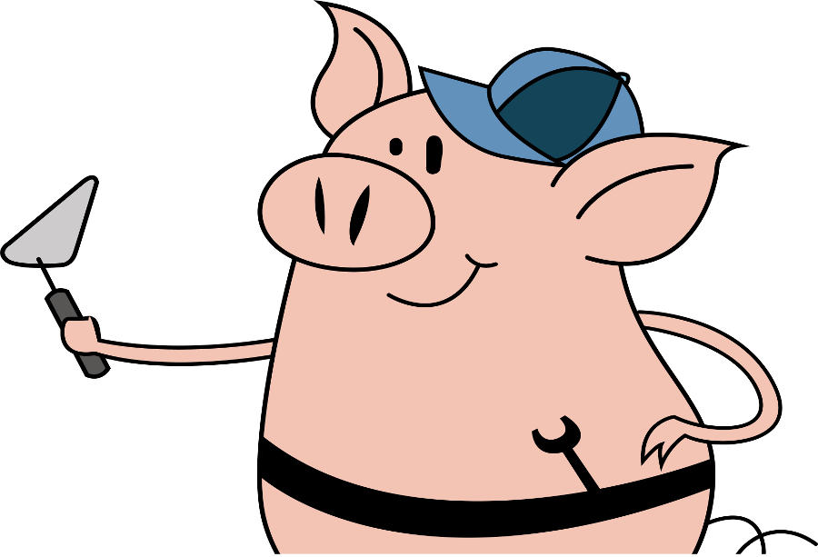
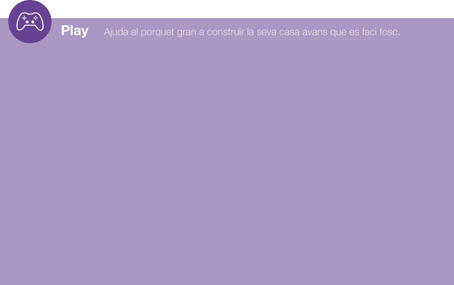
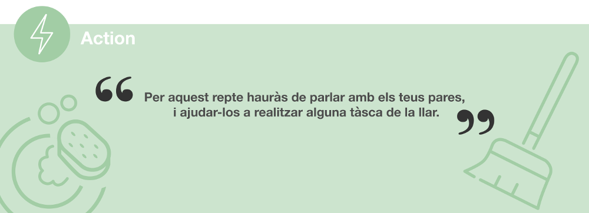
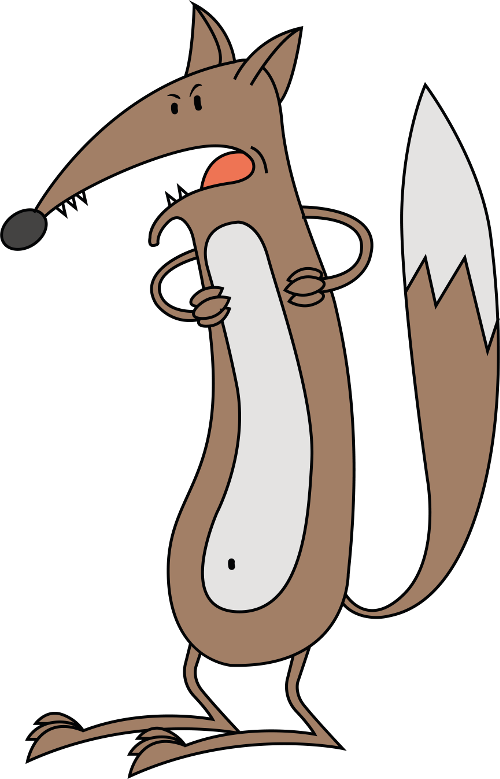
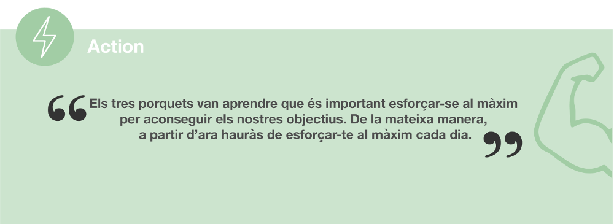
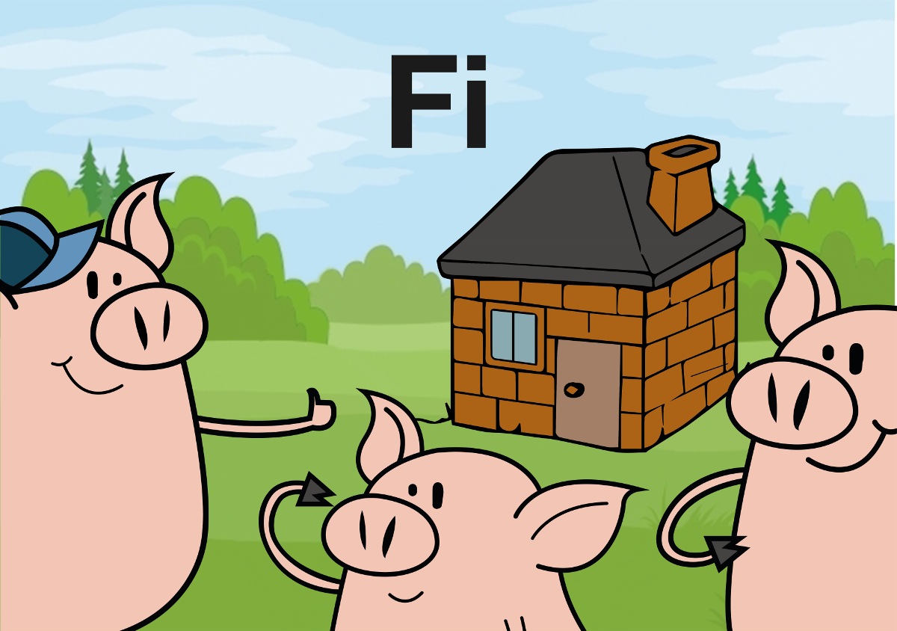

Els tres porquets

> Ara només necessitem una casa‒va dir el més gran dels tres.
> Tinc una idea, podem comprar maons i fer-nos una casa per viure-hi plegats.
Però als seus germans no els va agradar gaire la idea.
> No en tinc ganes‒va dir el més petit‒Els maons pesen massa. Jo agafaré canyes i palla
i em faré una casa.
> Jo tampoc no vull treballar‒va dir el mitjà‒Jo recolliré branques i faré una casa de fusta.
Després de discutir una estona, van pensar que seria millor que cadascú es construís la seva pròpia casa.

En canvi, el més gran, va posar-se a
treballar de valent. No parava de
portar totxos amunt i avall i de mica
en mica va anar aixecant una casa
molt sòlida amb un sostre ben
resistent capaç d'aguantar pluja i neu.
Suava la cansalada, però no va parar
de pencar mentre els seus germans
jugaven a voleibol


Quan es va fer fosc, ja tenia la casa acabada. Dalt del cel, la lluna brillava com un tros de
meló quan els tres porquets apagaven els llums per anar a dormir. De cop, un udol terrible
va trencar el silenci.

> Auuuuuuuuuuuuuuuu!!!!!!!
Era el llop ferotge, que cridava d'aquesta manera quan tenia l'estómac buit.
> Fa olor de carn fresca! -deia mentre se li feia la boca aigua.
Quan va veure la casa de palla, el llop es va posar a riure.
> Ha, ha, ha. Bufaré i la casa volarà!
El llop va agafar aire, va bufar i la casa es va esfumar. El porquet
que era dins va córrer cap a la casa que hi havia més a la vora.
Llavors, el llop es va acostar a la caseta de fusta.
> Ha, ha, ha. Bufaré i la casa volarà!
Va tornar a agafar aire i va bufar fins que la casa de fusta va sortir
volant. I els dos espantats porquets van correr a refugiar-se a la
casa del germà gran. El llop no va rendir-se i va arribar fins la tercera casa.
> Ha, ha, ha. Bufaré i la casa volarà!

El llop va bufar amb totes les seves forces, però la casa no es va moure ni una mica. Ho
va intentar per segona vegada. Va bufar tan fort que va deixar els arbres pelats i va fer
desaparèixer la lluna. Però la casa no va ni tremolar.
Els tres porquets eren dins morts de por. Però el porquet més gran va endevinar les intencions
del llop (baixar per la xemeneia) i, va tenir una idea:
> Podiem encendre la llar de foc, i quan el llop baixi per la xemenella es cremarà el cul i
marxarà corrents per mai no tornar. - va dir el gran.
> Molt bona idea! - van contestar els altres germans.
I així van fer, ràpidament van encendre la llar de foc.
I mira que n'han passat, d'anys, però es va rostir tant el cul que encara ara ha de seure de
costat. I segons diuen, sembla que s'ha tornat tant vegetarià que només menja iogurts
descremats.

